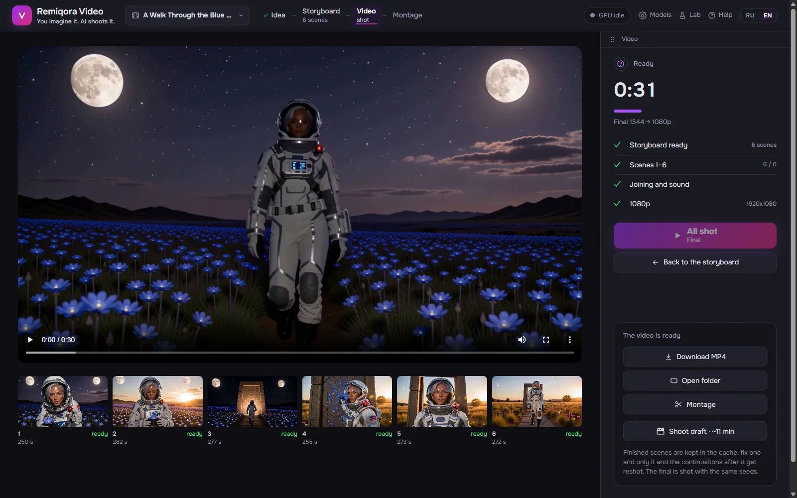
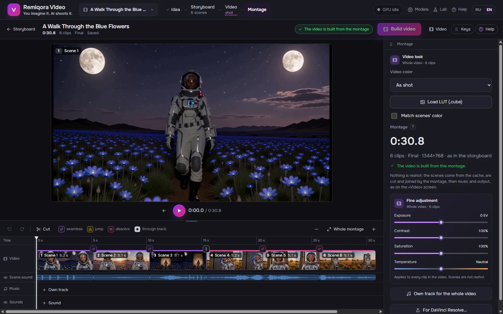
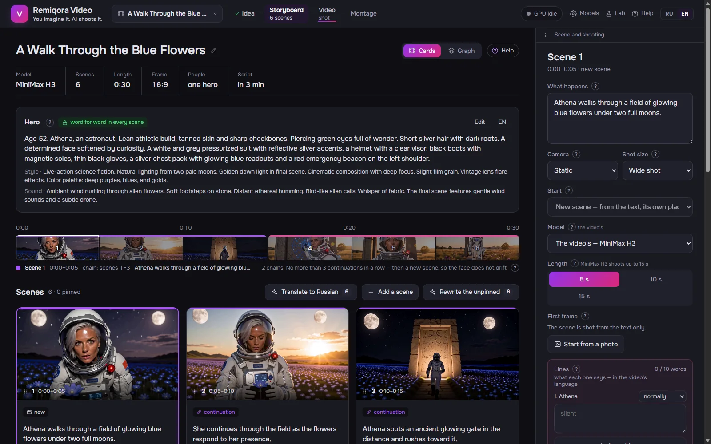
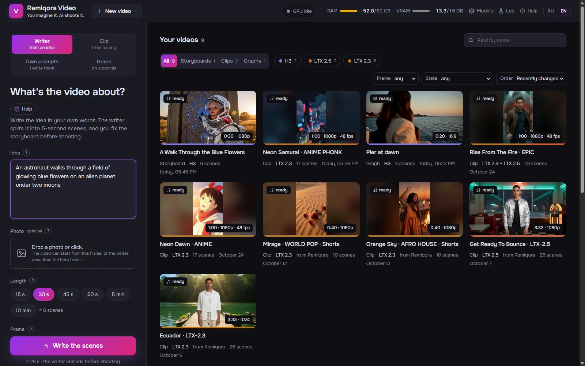
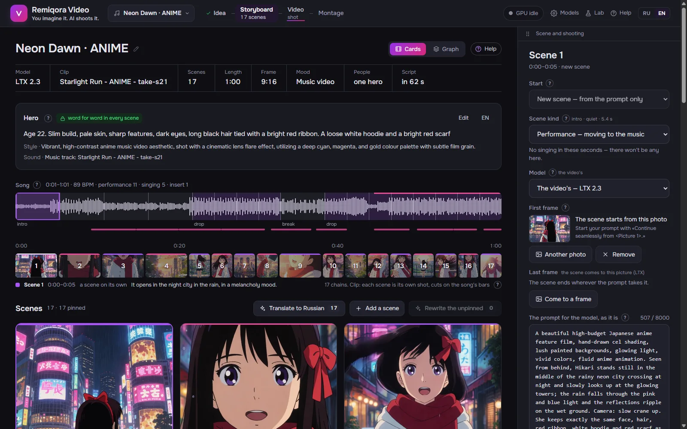
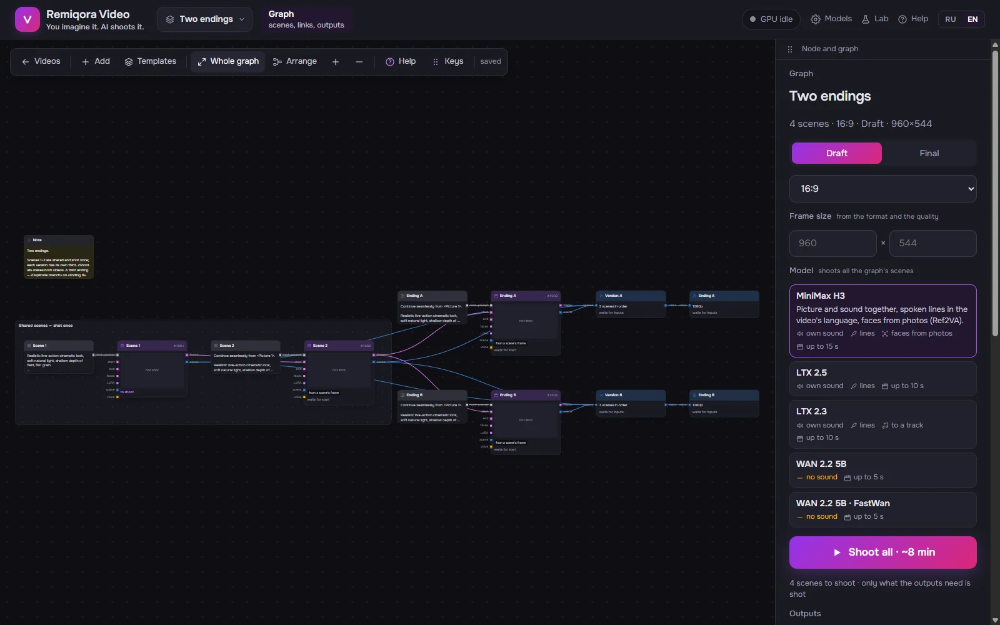
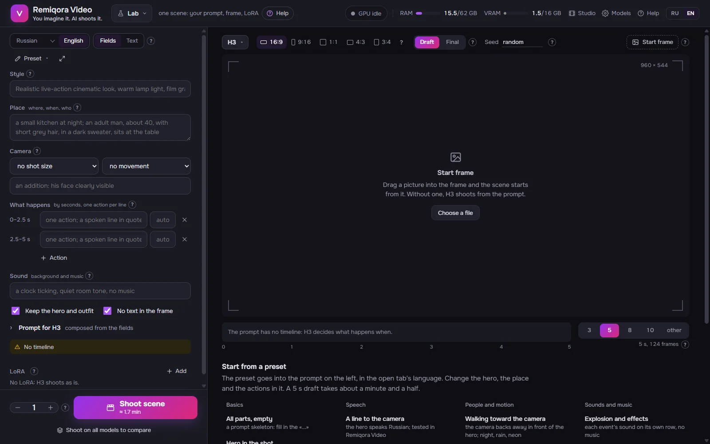
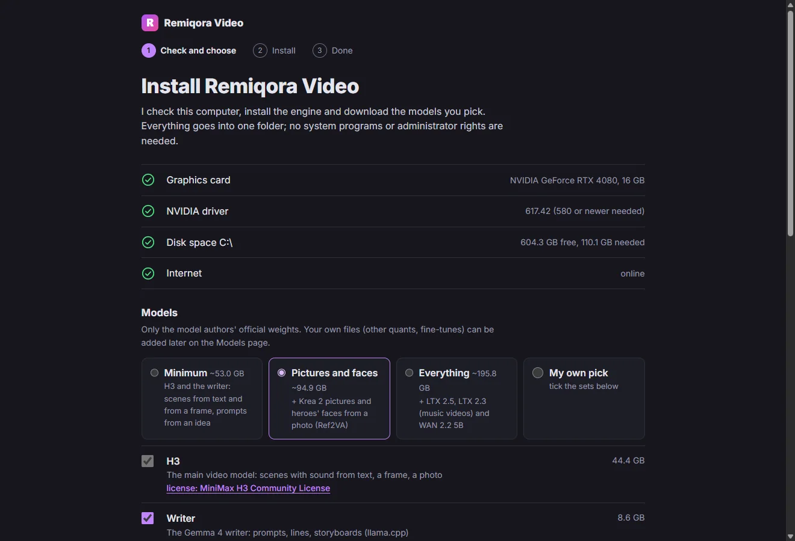
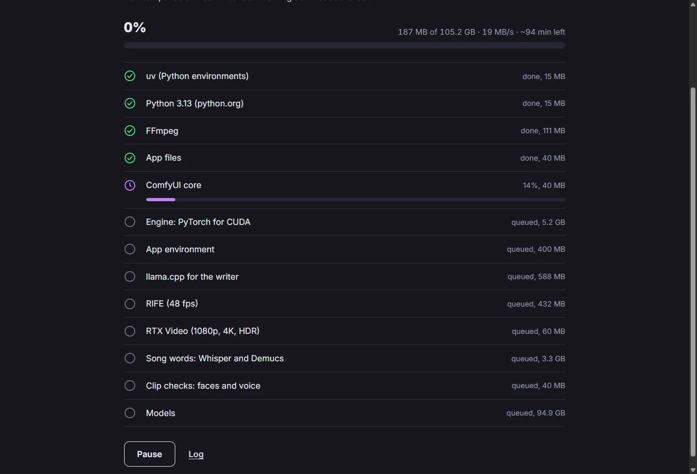

- Open source · Runs locally
- New: one-click installer · official models
- Windows · NVIDIA RTX 16 GB
- UI: English · Русский
Remiqora Video. You imagine it.
AI shoots it.
Remiqora Video turns a couple of sentences into a film. A local language model writes the storyboard; MiniMax H3, LTX 2.5 / 2.3 or WAN 2.2 shoot it scene by scene, with sound; the app joins the scenes, and you cut it on a timeline and finish in 1080p, 4K or HDR10. Everything runs on your own computer.
Download for WindowsSee it on GitHub
- Idea
- Storyboard
- Shoot
- Montage
- 4K / HDR



What's inside
Idea
A couple of sentences in your own words, and a photo if you like: as the first frame or only as the hero's look. Choose the model, the length from 15 s to 10 min, the frame (16:9, 9:16, 1:1) and who is in it. The writer reads and writes in 17 languages; the prompts for the video models are always English.

The idea screen Storyboard
Scene cards on a timeline. The hero's card keeps the face, clothes and voice word for word in every scene; every scene has its own model, length, first and last frame and LoRA. Rewrite a scene, pin the ones you like, or write your own prompts.
The storyboard Film
Scenes are shot in chains: each next one starts from the last frame of the one before. A 30 s draft takes about 10 minutes on H3 and 3.5–4 on LTX. The output is as shot, 1080p / 4K with NVIDIA RTX Video, HDR10 or 48 fps.
The film Montage
Trim, split, speed 0.5–2×, takes, transitions (flash, dissolve, dip to black), sound lanes, a beat magnet and one color for the whole film or your own LUT. Export the timeline to DaVinci Resolve as FCPXML with the files.
Montage Music video from a song
The song is split into bars and parts in about a second, and Whisper writes down the words with their timing. Scenes are cut to whole bars; LTX 2.3 hears its piece of the track and sings it.

A music video Graph
A canvas of 18 kinds of nodes for what a storyboard can't do: two endings from shared scenes, a short and a long version, a picture drawn by Krea 2 as the first frame. 16 ready templates.

The graph Lab
One scene by hand: a prompt by fields or as text, a start frame, LoRA and any model. «Shoot on all models» compares them on the same prompt and seed.

The lab
Video models
Only the official weights are installed, straight from the model authors or their official ComfyUI repacks. Any file of the same build works too: another quant, a fine-tune.
MiniMax H3
Faces and acting; faces from photos (Ref2VA). Its own sound and spoken lines in the video's language. Scenes up to 15 s.
LTX 2.5
Fast scenes with sound; «arrive at a frame» with a first and a last frame. Up to 10 s.
LTX 2.3
Music videos: shoots to your track and the heroes sing; the hero's voice from a sample. Up to 10 s.
WAN 2.2 5B
Picture only, Apache-2.0; FastWan does it in 8 steps instead of 20. Up to 5 s.
Krea 2
Pictures: a scene's first frame, a singer for a music video, a hero drawn from a description.
The writer
Gemma 4 E4B on llama.cpp writes the storyboard, the lines and the prompts; any GGUF chat model works.
Some models, MiniMax H3 among them, may be banned or restricted in some countries: make sure a model is legal to use where you live. Each model has its own license, and a video falls under the license of the model that made it.
Download
One installer for Windows. It installs per user, without administrator rights, then checks the GPU, the driver and the disk, lets you pick the model sets and downloads the engine and the official weights itself, with pause and resume.
Version 0.1.0, a pre-release. All files and SHA-256 sums
- About 53 GB for the minimum (H3 and the writer), about 196 GB for everything
- Weights you already have for ComfyUI are added as a folder and not downloaded again
- The installer has no certificate yet: Windows shows a SmartScreen warning


Before you install
What works
- Windows 11 with an NVIDIA RTX GPU, 16 GB of video memory (tested on an RTX 4080)
- Everything runs offline after the downloads; nothing is uploaded
- Help built into the app in English and Russian, and the same help as a Wiki
- Your own LoRA, compatible model files and GGUF writers
Limits
- Windows and NVIDIA only
- The writer and a video model take turns in video memory: a model reloads in up to half a minute
- Only H3 keeps faces from photos; LTX and WAN keep a face through the description and the start frame
- Every scene composes its own music: put your own track on top for one melody
- An early version: expect rough edges
From source
For developers: the scripts install the same official weights; the writer needs LM Studio or a llama.cpp build.
install.bat
git clone https://github.com/inikolax/remiqora-video
cd remiqora-video
install.batdev.bat
dev.batQuestions
Is Remiqora Video free?
Yes. The app is open source under GPL-3.0, with no account and no limits. It runs on your hardware; the only cost is electricity.
What hardware do I need?
Windows 11 and an NVIDIA RTX card with 16 GB of video memory; it is tested on an RTX 4080. Plan for about 53 GB of disk for the minimum and about 196 GB for every model.
Does it work offline?
After the one-time downloads, yes: the writer, the video models, montage and the finish all run on your computer.
Can I publish the videos?
A video falls under the license of the model that made it: MiniMax H3 Community License, LTX-2 Community License (free under US $10M revenue), WAN 2.2 Apache-2.0. Check the current terms on the model's page, and never make videos of real people without their consent.
Where is the documentation?
In the app: the Help button and a «?» by every field, in English and Russian, with 15 step-by-step scenarios. The same help is on the project's Wiki.
Something else? Ask in the issues.